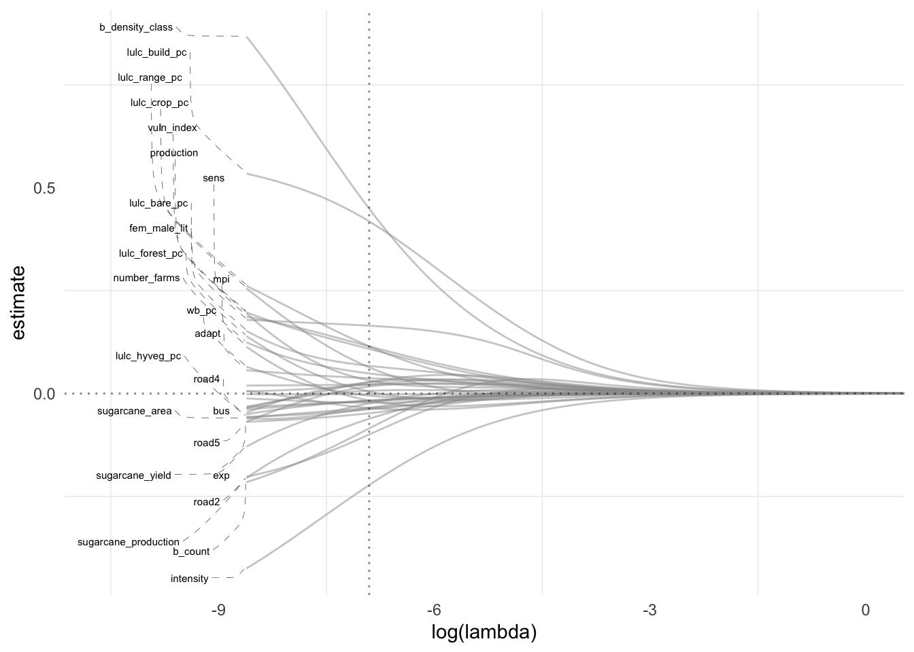

Show the code
targets::tar_visnetwork(targets_only =T)Pipeline used in generating output
targets::tar_visnetwork(targets_only =T)Summary of full data
full_data |>
select(outcome, where(is.numeric)) |>
gtsummary::tbl_summary()Characteristic |
N = 3,681,786 1 |
|---|---|
| outcome | 405 (<0.1%) |
| hf | 6,408 (0.2%) |
| ed | 772 (<0.1%) |
| mkp | 59 (<0.1%) |
| district_lgd_code | 484 (473, 492) |
| lulc_bare_pc | 0 (0, 0) |
| lulc_build_pc | 0 (0, 0) |
| lulc_crop_pc | 99 (20, 100) |
| lulc_forest_pc | 2 (0, 24) |
| lulc_hyveg_pc | 0.0000 (0.0000, 0.0000) |
| lulc_range_pc | 6 (0, 29) |
| wb_pc | 0.00 (0.00, 0.00) |
| rail_st | 883 (<0.1%) |
| road1 | 519,926 (14%) |
| road2 | 395,353 (11%) |
| road3 | 168,570 (4.6%) |
| road4 | 7,471 (0.2%) |
| road5 | 15,564 (0.4%) |
| road6 | 1,373 (<0.1%) |
| bus | 2,171 (<0.1%) |
| b_count | 1 (0, 5) |
| b_density_class | |
| 1 | 1,649,624 (45%) |
| 2 | 192,324 (5.2%) |
| 3 | 921,130 (25%) |
| 4 | 551,605 (15%) |
| 5 | 367,103 (10.0%) |
| vuln_index | 0.40 (0.26, 0.59) |
| exp | 0.72 (0.41, 0.82) |
| sens | 0.65 (0.46, 0.75) |
| adapt | 0.48 (0.43, 0.52) |
| headcount_ratio | 8.2 (5.7, 12.8) |
| intensity | 40.84 (39.09, 42.06) |
| mpi | 0.033 (0.024, 0.051) |
| total_crimes | 13 (6, 22) |
| overall_li | 80.7 (76.9, 84.2) |
| Unknown | 144,870 |
| fem_male_lit | 0.81 (0.79, 0.83) |
| Unknown | 144,870 |
| sugarcane_production | 144 (13, 855) |
| Unknown | 736,511 |
| sugarcane_area | 17 (2, 81) |
| Unknown | 736,511 |
| sugarcane_yield | 6,001 (5,019, 10,270) |
| Unknown | 736,511 |
| production | 1,461 (861, 2,954) |
| Unknown | 123,016 |
| number_farms | 2,129 (1,308, 2,807) |
| Unknown | 123,016 |
| 1
n (%); Median (IQR) |
|
Missingness by features in training set
train_data |>
naniar::gg_miss_var(show_pct = T)train_data |>
naniar::gg_miss_fct(fct = distname)+
coord_flip()+
geom_tile(color = 'white')train_data |>
group_by(outcome) |>
count() |>
spread(outcome, n) |>
mutate(prop = yes / (yes + no))# A tibble: 1 × 3
no yes prop
<int> <int> <dbl>
1 2945088 340 0.000115Distribution of outcome across predictors.
train_data |>
sample_n(100000) |>
select(-s_cell_id,
-d_cell_id,
-distname,
-district_lgd_code) |>
select(outcome, where(is.numeric)) |>
plot_ridge_by_predictor(y = outcome)Correlation between predictors.
corr =
train_data |>
select(-s_cell_id,
-d_cell_id,
-distname,
-district_lgd_code) |>
select(where(is.numeric)) |>
corrr::correlate()Correlation computed with
• Method: 'pearson'
• Missing treated using: 'pairwise.complete.obs'corr |>
rearrange() |>
shave() |>
rplot() +
theme(axis.text.x = element_text(angle = 90, hjust = 1))Network plot of correlation between predictors.
corr |>
corrr::network_plot()Warning: ggrepel: 11 unlabeled data points (too many overlaps). Consider
increasing max.overlapsRidge regression with downsampling and mean imputation for missingness on numeric features.
glmnet_train_fit |>
extract_workflow() |>
extract_recipe()── Recipe ──────────────────────────────────────────────────────────────────────── Inputs Number of variables by roleoutcome: 1
predictor: 35
ID: 4── Training information Training data contained 2945428 data points and 748920 incomplete rows.── Operations • Down-sampling based on: outcome | Trained• Mean imputation for: total_crimes and sugarcane_production, ... | Trained• Zero variance filter removed: <none> | Trained• Centering and scaling for: hf, ed, mkp, lulc_bare_pc, ... | TrainedCoefficients from ridge regression trained on (downsampled) training set.
glmnet_train_fit |>
extract_workflow() |>
tidy() |>
coef_plot()
Path of coefficients over regularization with dotted line indicating selected penalty.
glmnet_train_fit |>
extract_workflow() |>
trace_plot()
Results from resampling on training set.
train_metrics# A tibble: 4 × 4
under_ratio .config mn_log_loss roc_auc
<dbl> <chr> <dbl> <dbl>
1 10 Preprocessor1_Model1 0.0773 0.889
2 100 Preprocessor2_Model1 0.00985 0.888
3 1000 Preprocessor3_Model1 0.00165 0.883
4 10000 Preprocessor4_Model1 0.00109 0.870Results from predicting validation set.
valid_metrics# A tibble: 2 × 4
.metric .estimator .estimate .config
<chr> <chr> <dbl> <chr>
1 mn_log_loss binary 0.00147 Preprocessor1_Model1
2 roc_auc binary 0.899 Preprocessor1_Model1Distribution of scores across propensity by type.
quantiles = seq(0, 1, 0.1)
propensity |>
group_by(type) |>
reframe(quantile = quantiles,
.pred_yes = quantile(.pred_yes, quantiles)) |>
arrange(quantile) |>
pivot_wider(names_from = c("type"),
values_from = c(".pred_yes")) |>
print(n = 25)# A tibble: 11 × 3
quantile train_cv valid
<dbl> <dbl> <dbl>
1 0 0.0000161 0.0000231
2 0.1 0.000250 0.000251
3 0.2 0.000314 0.000314
4 0.3 0.000380 0.000380
5 0.4 0.000460 0.000458
6 0.5 0.000541 0.000539
7 0.6 0.000660 0.000659
8 0.7 0.000803 0.000799
9 0.8 0.00104 0.00103
10 0.9 0.00174 0.00173
11 1 0.594 0.387